Referans düzeni, ortak Limely markası.
Sol menü, içerik hiyerarşisi, tablolar ve sağ atama paneli ZIP referanslarından; renkler, logo, maskot, SVG ikonlar ve Manrope / Inter fontları ortak paketten. Bu ilk aşama yalnız HTML önizlemesidir. React uygulaması değiştirilmedi.
Yeni açılır seçimler ve takvim
Yedi seçim alanı aynı bileşeni kullanır. Beyaz yüzey, yeşil seçili satır ve ortak SVG ikonlarıyla uyumlu listeler; ekran sınırında yön değiştiren, kaydırılabilir açılırlar. İki tarih alanı da aynı görsel dilde takvimle açılır.
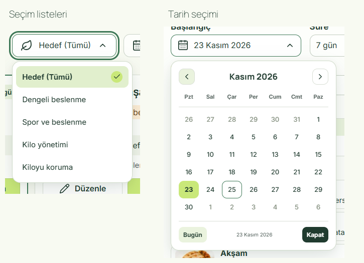


Giriş


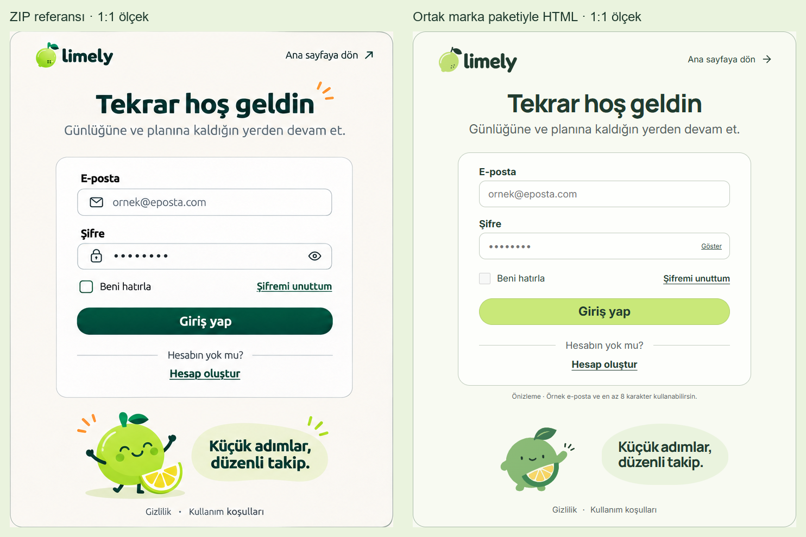
Danışanlar


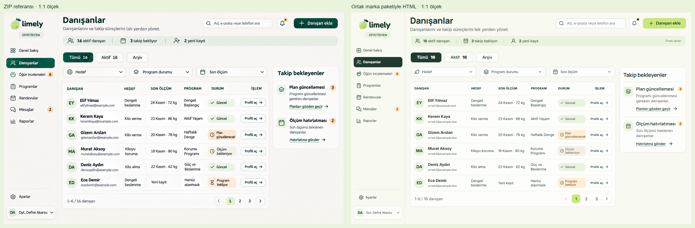
Program hazırlama ve atama


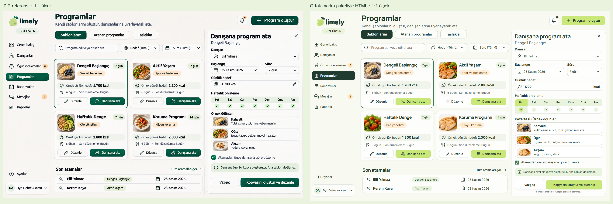
Telefon genişliği · 390 px
Tablo dar ekranda etiketli satır kartlarına dönüşür. Sol menü açılıp kapanır; atama paneli içerikten sonra açılır.

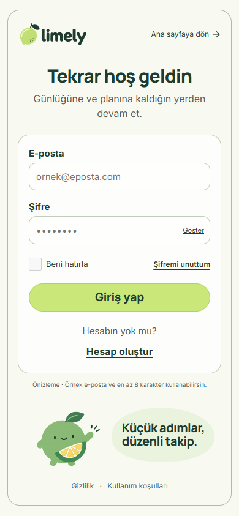

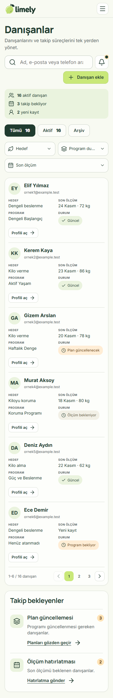

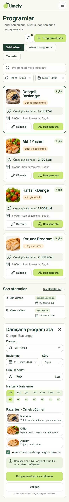
Kontroller ve kalan farklar
27 Playwright kontrolü başarılı: 1585 / 1024 / 768 / 390 px, arama/filtre/sayfalama, sekmeler, panel, form doğrulaması, klavye odağı ve kaynak varlık bütünlüğü. HTTP/API isteği yok. Koşu sonuçları.
Pakette referansla birebir aynı veya yüksek çözünürlüklü olmayan bazı yemek fotoğrafları var. E-posta, kilit ve göz ikonu pakette bulunmadığından etiket/metin düğmesi kullanıldı. Referanstaki kalıcı oturum, bildirim, şablon kütüphanesi ve toplu sağlık özeti mevcut API desteği sayılmaz.
Mevcut Icon çağrılarında paket karşılığı olmayanlar: target, link, lab, eye, eyeOff, sun, mail, lock, camera, barcode, energy, attachment, send, download, database. Tam eşleştirme.
İnceleme, kapsam ve doğrulama raporunu aç
LIMELY WEB ÖNİZLEMESİ — 25 KASIM 2026 SON DÜZELTME — TÜM AÇILIR SEÇİMLER Önizlemedeki yedi native seçim alanı ortak, tasarıma uygun listelerle değiştirildi: Danışan hedefi / program durumu / son ölçüm; program hedefi / süresi; atanacak danışan / atama süresi. Beyaz yüzey, ortak kenarlık/radius/gölge, yeşil hover ve seçili satır, paket SVG onay ikonu kullanılıyor. Uzun listeler kendi içinde kayıyor. Listeler ekran sınırında gerektiğinde yukarı açılıyor ve sayfa kayarken alanı takip ediyor; ekran dışında kalan alanın listesi kapanıyor. Tek açılır katman açık kalır. Yukarı/aşağı, Home/End, Enter/Space, karakterle arama, Tab, Escape ve dışarı tıklama destekleniyor. ARIA combobox/listbox, selected/expanded/activedescendant ve görünür odak bilgileri bulunuyor. Atama ve program editöründeki iki tarih alanı aynı görsel dilde takvimle açılıyor; ay geçişi, klavye yönleri/PageUp/PageDown/Home/End, bugün ve tarih seçimi aynı ISO tarih alanlarını güncelliyor. Hesap ve bildirim menülerinin satır, tipografi, radius ve gölgeleri de ortak açılır diline uyarlandı. Görünmeyen native değer alanları mevcut change/input akışını koruyor; uygulama sözleşmesi değişmedi. Yeni paket/framework kurulmadı. Kaynak logo, ikon, maskot ve font dosyaları değiştirilmedi. Yeni ortak bileşen: secim-kontrolleri.js ve secim-kontrolleri.css. index.html bunları yerelden yükler. Güncellenen diğer kaynaklar: onizleme.js/css, dogrula.cjs, hazirla.py ve bu rapor. Yeni açık seçim/takvim görselleri, sonuç JSON'u ve karşılaştırma sayfası yenilendi. Güncel tam koşu 27 kontrol geçti. Açık listeler dört genişlikte; takvimler masaüstü/tablette/telefonda; mevcut filtreler, form/taslak akışı ve önceki menü/haftalık tablo kontrolleri doğrulandı. Tam ekran okuyucu/cihaz uyumluluk onayı yapılmadı; bu çalışma sentetik HTML önizlemesiyle sınırlı. ÖNCEKİ DÜZELTME — SOL MENÜ VE HAFTALIK ÖNİZLEME Sol menüdeki taşma, gezinme satırlarının min-content genişliğinin kendi sütununu aşmasıydı. Menü satırları ikon / esneyen metin / rozet sütunlarına ayrıldı; min-width sınırları düzeltildi. Uzun metinler dar masaüstü sütununda satıra geçebilir; başlıklar kesilmez ve rozet dışarı taşmaz. Menü kontrolü artık yalnız sayfaya değil, sol sütunun kendi sınırlarına ve kesilen metne de bakıyor. Haftalık önizleme gerçek bir HTML tablosu olarak yeniden kuruldu: yedi eşit sütun, ayrı başlık/işaret satırı, aynı eksendeki gün/işaretler. Seçili gün başlıktan gövdeye aynı sütunda vurgulanır. Yarım görünen gölge çerçevesi kaldırıldı; klavye odağı düğmenin içinde görünür kalır. Danışan tablosunun telefon dönüşümü yalnız o bileşene sınırlandı; haftalık tabloya sızmaz. Sol menü: 1585, 1440, 1366, 1280, 1100, 1024 px ve CSS zoom 1 / 1.25 / 1.5 benzetimi geçti. Haftalık tablo: 1585, 1280, 1024, 768, 390 px; tüm günler, tek seçim, başlık/işaret hizası, Tab ve Space kontrolleri geçti. CSS zoom gerçek tarayıcı yakınlaştırmasının birebir cihaz testi değildir. Bu önceki düzeltmenin tam koşusu: 24 kontrol başarılı. Önce sütun sınırı testiyle taşma yeniden üretildi; düzeltmeden sonra bu test ve mevcut kontroller yeniden başarıyla çalıştırıldı. Değişen kaynaklar: onizleme.css, onizleme.js, dogrula.cjs, hazirla.py ve bu rapor. Sonuç JSON'u, ekran görüntüleri ve karsilastirma.html aynı önizleme klasöründe yenilendi. React, font/ikon/logo dosyaları, backend, mobil ve 04/05/06 sözleşmeleri değişmedi. TESLİM index.html dosyasını herhangi bir masaüstü tarayıcıda açın. Kurulum veya sunucu gerekmez. Üstteki önizleme çubuğundan Giriş, Danışanlar, Programlar ve Karşılaştır ekranlarına geçilir. Girişte geçerli biçimde örnek e-posta ve en az 8 karakterlik örnek şifre kullanılabilir. Tüm kişi, iletişim ve sağlık değerleri sentetiktir. Formlar gerçek oturum, kayıt, atama, davet veya e-posta oluşturmaz. İlk üç ekran dışındaki menü düğmeleri kapsam açıklaması açar; tamamlanmış başka ekran göstermez. DEĞİŞİKLİK SINIRI Yalnız output/limely-web-onizleme/ oluşturuldu. React uygulaması, Flutter, backend, DB, AGENTS.md, README dosyaları, docs/** ve kaynak marka paketi değiştirilmedi. 04/05/06 sözleşmeleri, endpoint, DTO, JSON, storage anahtarı veya veri modeli değişmedi. Backend/mobil geliştiricisi açısından entegrasyon veya migration gerekmiyor. Başlangıçtaki output/bitirme/ içeriği korundu. Git senkronizasyonu veya yazma işlemi yapılmadı. Diğer geliştiricinin checkout/oturumu doğrulanmadı; ortak modülde yazma yapılmadı. KAYNAKLAR VE ÖNCELİK Yerleşim: yeni-web-mobil-ekranlar.zip içindeki WEB ekranları. 13 PNG'nin tamamı görsel olarak incelendi; 11 web, 2 yalnız mobil. Arşiv yalnız bu önizlemenin referanslar/ altına çıkarıldı. Giriş için iki panelli 08.png kaynağının sol giriş paneli esas alındı; web danışan kaydı eklenmedi. Marka: output/limely-marka-paketi-v1/ (manifest sürümü 1.1.0). KULLANIM.txt, asset-manifest.json, tokenlar, ekran-varlık eşleştirmesi ve KATALOG.html incelendi. Kaynaklardaki prompt, kod ve V3 yerleşim önerileri görev talimatı olarak uygulanmadı. Sol menülü düzen korundu. Yatay V3 navigasyonuna geçilmedi. Kanonik yedi renk merkezi CSS değişkenlerine bağlandı; beyaz kartlar ve durum renkleri korundu. Son kullanıcı mesajı uyarınca web başlıkları Manrope, gövde metinleri Inter olarak ortak paketten yüklendi. Fredoka/Figtree paketin karşılama tipografi yönüdür; web panelinin tamamına uygulanmadı. Logo vektör varlığıdır; yazısı yeni fontla oluşturulmadı. Logo/maskot filtrelenmedi, oranları korundu. İkonlar ortak iconMap fonksiyonuyla dosyalara bağlandı; 24×24 SVG, kaynak 1.8 çizgi dili korundu. Font ve ikon lisansları varlıklarla birlikte kopyalandı. Tüm kopyalar SHA-256 ile doğrulandı. GitHub'da main dalındaki tasarim/limely-fonts.css salt okunur connector üzerinden ayrıca doğrulandı. Kaynak katalog yerel Git'te 368cfeb commit'iyle izleniyor; bu bilgi uzak HEAD güncelliği iddiası değildir. ÖNİZLEME DOSYALARI index.html: üç ekranın açılış dosyası. onizleme.css: merkezi renkler, paket fontları, masaüstü/tablet/telefon düzeni. onizleme.js: ortak ikon eşleştirmesi ve yalnız bellek kullanan sentetik etkileşimler. karsilastirma.html: masaüstü, dar ekran ve 11 web referansının route eşleştirmeleri. gorseller/: 3 ekran × 4 genişlik, 1536 px giriş örneği, giriş paneli, telefon editörü ve karşılaştırmalar. referanslar/: ZIP'in 13 özgün PNG kopyası ve inceleme kontakt sayfaları. varliklar/: kaynaktan değiştirilmeden kopyalanan SVG, yemek fotoğrafı ve font/lisanslar. varlik-kaynaklari.json: dosya kaynakları ve SHA-256 imzaları. ikon-eslestirmesi.json: mevcut React Icon çağrılarının paket karşılıkları ve eksikler. referans-eslestirmesi.json: ZIP dosya adları, ölçüler ve mevcut route karşılıkları. dogrula.cjs: mevcut @playwright/test + Edge ile sentetik önizleme kontrolleri. hazirla.py: aynı ölçekte karşılaştırma ve inceleme sayfası üretimi (mevcut Pillow). dogrulama-sonuclari.json: bu teslimde gerçekten çalıştırılan tarayıcı kontrol sonuçları. GÖRSEL KARŞILAŞTIRMA Danışan ve program görselleri kendi 1585×992 referans ölçüsünde karşılaştırıldı. Program önizlemesinin referanstan farklı yüksekliği karşılaştırmada boş alanla dengelenir; ölçek değiştirilmez. Giriş kaynağı 1536×1024'tür; sol panel (39,86)-(745,1000) kırpımı 706×914 ölçüsündedir. Giriş önizleme paneli aynı boyutta alındı. Her çiftte kaynak ve önizleme aynı 1:1 piksel ölçeğindedir. Karşılaştırma sayfası iki tarafı ekrana birlikte sığdırır; görsele tıklayarak orijinal çözünürlük açılabilir. Belirgin kalan farklar yeni marka renkleri, onaylı logo/maskot/ikon çizimleri ve istenen paket fontlarıdır. Referansın raster doku/gradyanı CSS arka planına taşınmadı; yeni kanonik düz zemin kullanıldı. Bazı yemek fotoğrafları referansla birebir aynı değildir. Paketteki food-salad (73×38) ve food-chicken (72×39) küçük kaynaklar olduğundan büyüyen kartlarda yumuşak görünür; yeni fotoğraf üretilmedi. Referanstaki e-posta/kilit/göz simgeleri pakette yoktur; girişte alan etiketleri ve Göster/Gizle metin düğmesi kullanıldı. Beni hatırla mevcut cookie sözleşmesinde desteklenmediğinden önizlemede pasiftir. MEVCUT KOD / BELGE FARKLARI docs/09_DESIGN_SYSTEM.md eski açık marka #386a5e, sayfa #f7f8fa, metin #243a36 ve sistem fontunu anlatıyor. Mevcut web tokens.css ise #005b49 marka, #f9f6f3 sayfa, #101b1c metin ve Roboto/Nunito Sans içeriyor. Bu önizleme kullanıcının #F8FAF2 / #203B2F / #C9E879 / #83B977 / #3D7756 / #F5D96A / #EAF3DE marka talimatını ve son mesajdaki paket fontu yönünü esas alır. Belge ve React tokenları değiştirilmedi. docs/08_WEB_SPEC.md kök route'u /giris diye tanımlıyor; mevcut App.tsx /nasil-calisir'e yönlendiriyor. 08'in route envanterinde sonraki eklenen tanıtım ve çalışma alanı bölüm route'ları eksik. Mevcut auth, MFA, izin, API, sayfalama ve taslak davranışlarına bu aşamada müdahale edilmedi. API / ÜRÜN SINIRLARI Danışan listesi API'si yalnız id/displayName ve totalCount sağlar; e-posta, hedef, son ölçüm, program ve genel takip durumları toplu yanıtta yoktur. Referanstaki bunların hepsi burada sentetik örnektir. Mevcut API'de query/sortOrder/page/pageSize var; referansın hedef/program/ölçüm filtreleri bu önizlemede yalnız yerel örnekleri süzer. Onay sonrası canlı uygulamada desteklenmeyen özet/filtreler gerçekmiş gibi eklenmemeli. NutritionPlan clientId ile danışana bağlıdır. Bağımsız şablon kütüphanesi endpoint/modeli yoktur. Mevcut uygulamadaki program kopyalama, içerik taslağı, sürümler ve açık aktivasyon korunmalıdır. Şablonlarım, atama örnekleri ve kopya paneli burada görsel akış örneğidir; yeni API sözleşmesi değildir. Mesaj/randevu yüzeyleri mevcut uygulamada desteklenmiyor; PDF ve bildirim teslimi de çalışan API özelliği değildir. Öğün referansındaki diyetisyenin gerçek tüketimi değiştirmesi mevcut salt okunur yetkiyle çelişir; onay sonrası görsel uyarlama bu yetkiyi genişletmemelidir. Sağlık kaydı, ilişki, paylaşım izni, program aktivasyonu veya veritabanı migration işlemi yapılmadı. DOĞRULAMA node --check output/limely-web-onizleme/onizleme.js: başarılı. node --check output/limely-web-onizleme/secim-kontrolleri.js: başarılı. node --check output/limely-web-onizleme/dogrula.cjs: başarılı. node output/limely-web-onizleme/dogrula.cjs: 27 kontrol başarılı (Microsoft Edge, Playwright 1.65.1). 1585, 1024, 768, 390 px; üç ekranda yatay taşma, görsel yükleme, font ve zemin kontrolleri geçti. Giriş doğrulama, Göster/Gizle, örnek geçiş; danışan arama/boş/filtre/sayfalama/arşiv; klavye açılır menüleri, Escape, diyalog odak sınırı/dönüşü; program sekme/filtre/panel/gün/kopya/taslak; telefon menüsü ve editör taşması kontrol edildi. HTTP/API istek sayısı 0, konsol/JS hata sayısı 0. Varlık dosyaları kaynaklarıyla byte düzeyinde eşleşti; imzalar kontrol edildi. Önceki menü ve haftalık tablo kontrolleri korunuyor. Güncel 27 kontrol bu açılır seçim/takvim düzeltmesinden sonra yeniden çalıştırıldı; eski sonuçlar yeni koşu sayılmadı. Gömülü tarayıcı loopback adresine ulaşamadı. Windows CUA, URL güvenini doğrulayamadığı için durdu. Bu yüzden görünür tarayıcıya teslim doğrulanmadı; yerel file:// HTML, Edge/Playwright ile açılıp test edildi. React typecheck/lint/unit/build ve canlı backend testleri çalıştırılmadı; React veya backend değişmedi. git diff --check: başarılı. Son git status yalnız önceden var olan output/bitirme/ ve yeni output/limely-web-onizleme/ gösterdi; izlenen dosya diff’i boş. Yeni HTML/CSS yerel bağlantıları ve yazılan metin dosyalarının satır sonu boşlukları ayrıca kontrol edildi: hata yok. Kaynak lisans dosyalarındaki mevcut boşluklar içeriği korumak amacıyla değiştirilmedi. Tarayıcı testleri tam ekran okuyucu, fiziksel telefon veya bütün WCAG uygunluğu sertifikası değildir. SONRAKİ TEK ADIM HTML ve yan yana görselleri inceleyin. Açıkça “bu tasarımı onaylıyorum, web koduna uygula” talimatı gelmeden React uygulamasına aktarım yapılmayacak. Düzeltme istenirse önce bu önizleme güncellenir.
İncelenen 11 web referansı ve mevcut route karşılıkları
İki yalnız mobil kaynak yerleşim için kullanılmadı. Referanslardaki yazı/prompt/kod yeni çalışma talimatı sayılmadı.

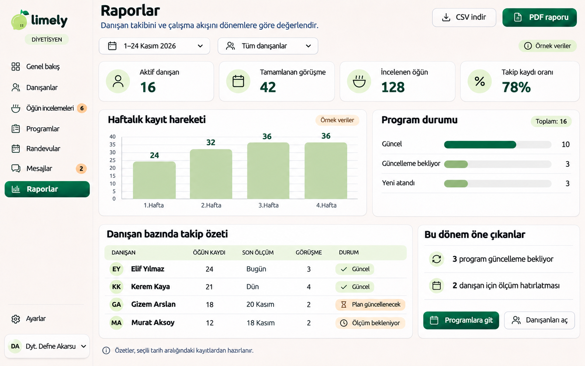
/calisma-alani/raporlar
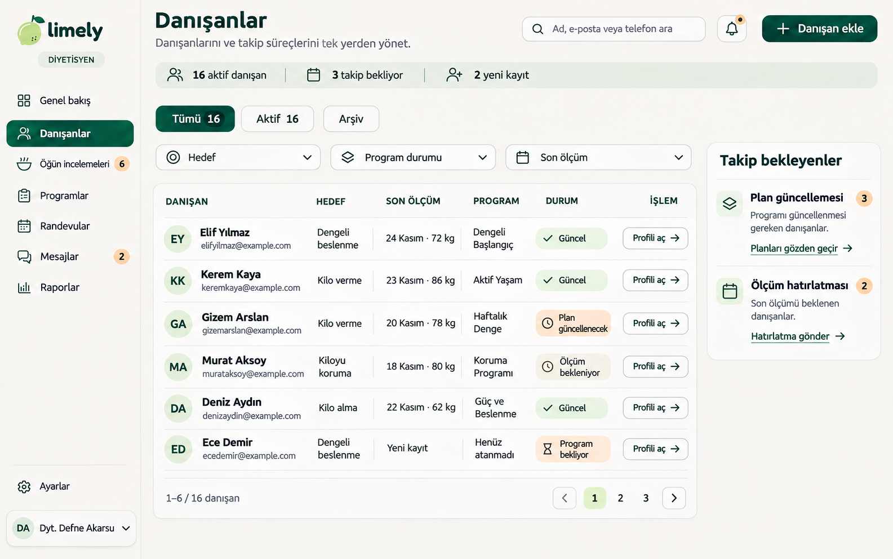
/calisma-alani/danisanlar

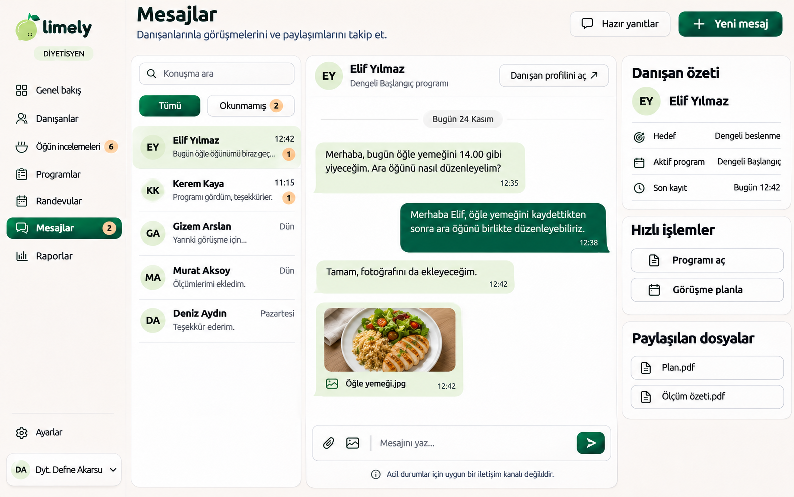
/calisma-alani/mesajlar — mevcut desteklenmeyen yüzey
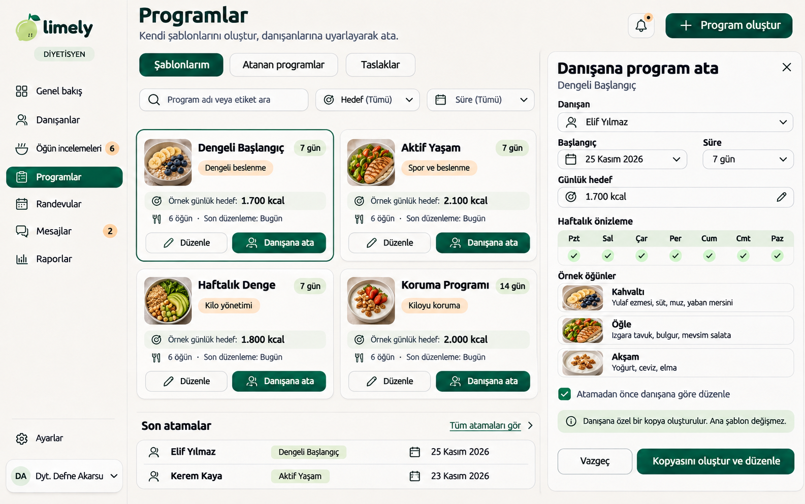
/calisma-alani/programlar; danışana özel program detayları

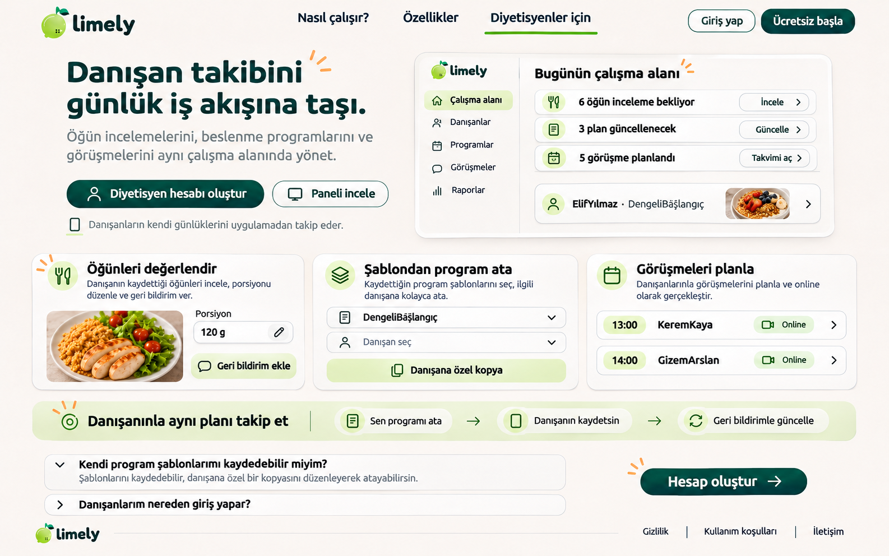
/diyetisyenler-icin

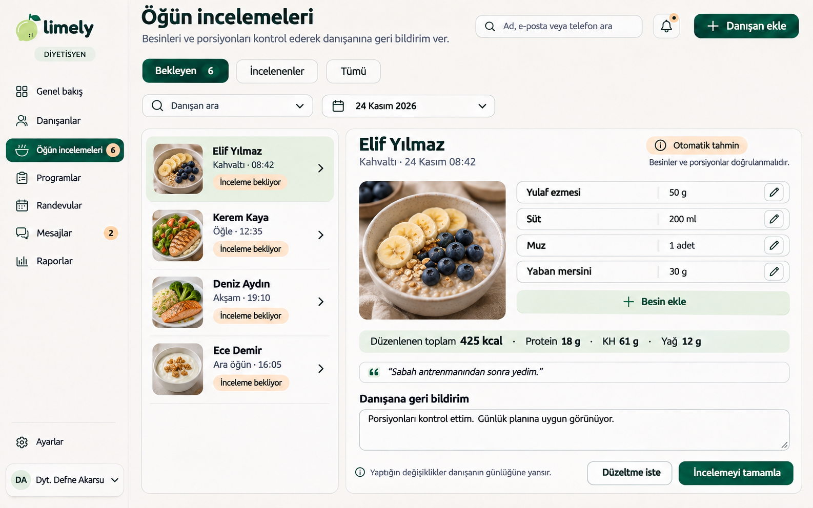
/calisma-alani/ogun-incelemeleri; danışan detayı ?bolum=ogunler

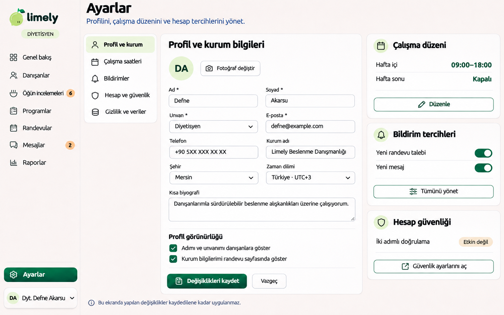
/hesabim — mevcut hesap kapsamıyla sınırlı
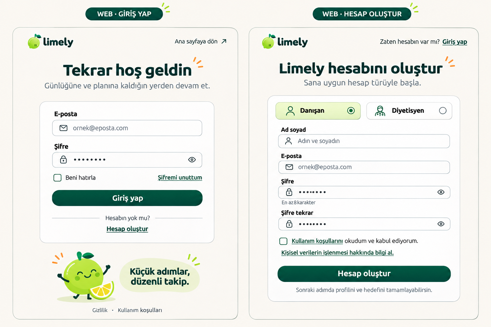
/giris; uzman için /uzman-basvurusu; web danışan kaydı yok

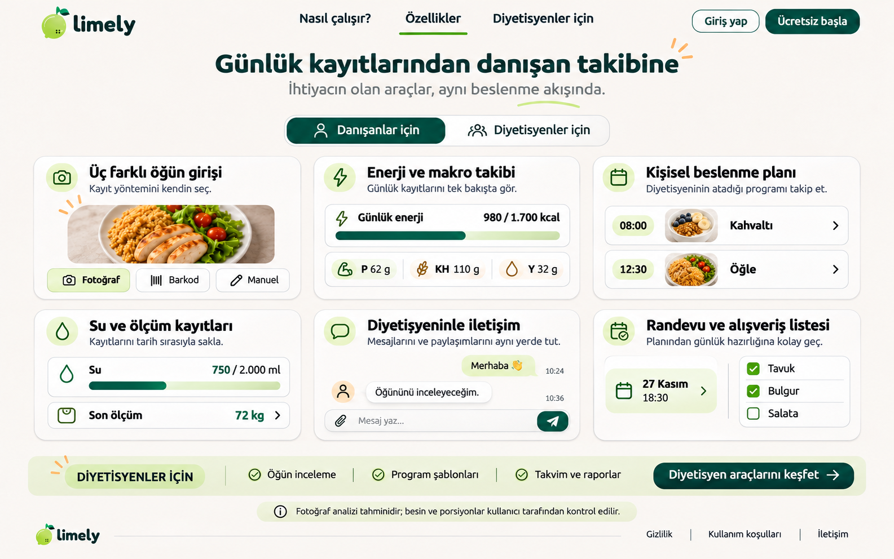
/ozellikler

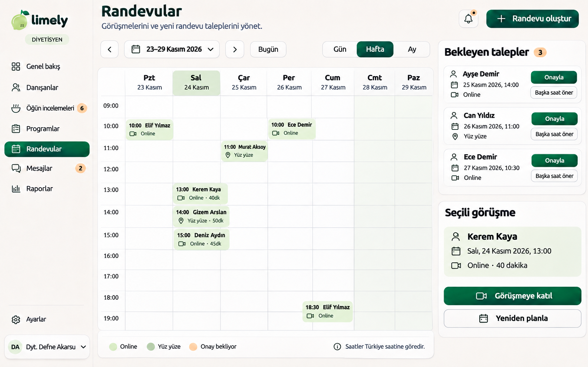
/calisma-alani/randevular — mevcut desteklenmeyen yüzey

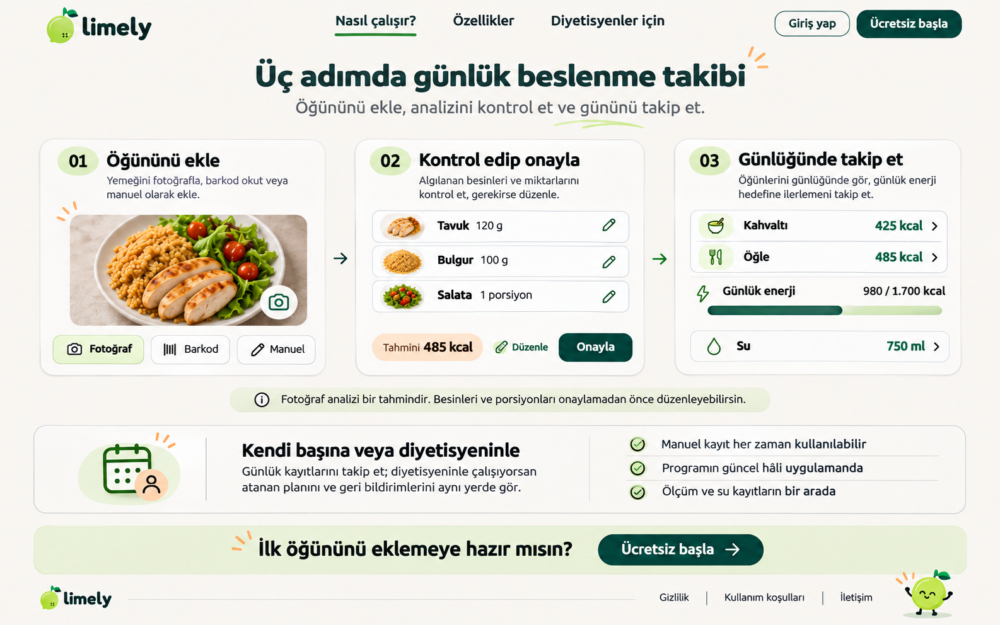
/nasil-calisir